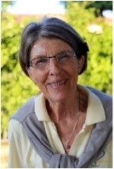

How did you start meditating?
I am a world traveller, born in New Zealand but grown up in the world really. In 1976, at the very lowest point of my life ever, I ended up in the Canary Islands and there, as destiny would have it, I was lent Knowledge of the Higher Worlds, one of Rudolf Steiner’s early books. I read it in one night and started meditating the next day. Of course, I didn't get very far but it was my first attempt and the event turned my life around completely. I went back to New Zealand, joined the anthroposophical society and started studying anthroposophy.
In 1982, I joined the First Class of the School of Spiritual Science and began seriously to try to meditate, turning again from time to time to that first book. In 1983, I made a commitment to meditate three times a day in service of humanity, the Earth, the archangel Michael.
Some people have an immediate entry into this other level of being, but for others, as Rudolf Steiner says in Knowledge of the Higher Worlds: Be patient, for some people it can take years to achieve any spiritual insight! This always helps me, because although I have music and language gifts, I was not particularly blessed spiritually.
My next real help came about 10 years ago through Arthur Zajonc, but I have been a meditant since 1983. Like many people, I experience that sometimes it works wonderfully well and sometimes it doesn't. I’ve learnt that it depends on me, what's going on and where I am at; to the extent I can make myself open and free for another level of experience.
Why do you meditate?
That's a complex question. I began because I wanted to find a way of being that was more fruitful than just my daily existence. But I have grown over the years to know that I meditate for others, for the Earth, for the dead who are around us all, for our spiritual guides, to learn humility, to practice awe and wonder. These are all things that I've had to learn, because although I probably had them as a child, they were gone in my materialistic younger life. And I had to learn to trust in the ever present help of the spiritual world – that was a big one for me.
I also meditate to use the night, by carrying my mood or questions into sleep. I do that very consciously. I meditate to keep myself open for the spirit, to always be aware of this other reality of our world and life. One of the most important things about anthroposophical meditation is that you don't do it for yourself. You do it for the world around you, the people around you.
One other thing. Rudolf Steiner also said: Where a number of people are rightly meditating, a light shines into the universe. This inspires me and keeps me going.
What's the uniqueness of the anthroposophical meditation for you?
It's not unique to anthroposophical meditation, but to all meditative practices. It opens a way to another way of being in this world and it enables me to come to a place where I am released from all my daily cares and woes and can just be, become aware of who I truly am. This enables me to come into contact with my own true being in relation to other beings that are invisible. It opens the way to the supersensible, uses the organs that we otherwise don't normally have use for in the world. The main thing about anthroposophical meditation is that one is left completely free.
That has two sides. It can be very helpful and releasing but it also means that you can be very much on your own. For me it's positive. It enables me to make my own way, to make mistakes and my own discoveries. To begin to sense my higher self, my divine origin, to realise that I am never alone. I am responsible for my own development and the only limitation on that is placed by myself and my own earthly inabilities to actually let go and be free.
That's also why there's no one way in anthroposophical meditation, because of its inherent basic freedom. It also means that I must look for help, find the help that I need. That's not always an easy path. Arthur Zajonc's approach of contemplative inquiry is extremely helpful for me.
Maybe we should talk more about the basics of anthroposophical meditation.
The review (rückshau) is one the most important things one learns to do. That is to, at the end of the day, look backwards at the day’s events, step by step. The details depend on how tired one is and how many things happened during the day. But even if one focuses on just a single point, it's still a really good step. It's learning to look in reverse order at the things that have happened and through that, begin to see what is actually important out of it all, what can be learnt.
We see the meditative path as moving through concentration first of all, then to contemplation, and only then – meditation. There are six basic exercises which are not meditations but exercises to create space and clarity in the soul, to enable the spirit to connect to it, to speak, to be able to come to meditation.
Those six basic exercises cover thinking, which relates to concentration and focus; feeling, to be able to find that awe, wonder and respect; will, to begin to be able to find my own will, the deepest, darkest part of my being, where I am most asleep, to actually be able to interact with my will, exert it over myself and then devote it to others. These are followed by positivity and openness. All of these together create the ability to be able to walk the path from humility to wonder and reverence and then to be able to come into the center of oneself, the silent self.
That's a path to meditation. Humility, to begin with, then wonder and reverence and then coming to the still place of oneself and focusing there on anything that one will. It can be something as simple as a stone or a set of words, simple lines like ‹wisdom lives in the light›, or ‹love grows in all›.
The Foundation Stone meditation is a wonderful base exercise, a base meditation to work with. It's big, it opens up wonderful worlds that one can begin to live in, live with. For me, it's one of the most inspiring meditations that we have in anthroposophical work. There are many, many more. Rudolf Steiner gave so many indications and so many ways of working, but left everyone completely free.
I already mentioned Arthur's book Meditation as Contemplative Inquiry: When Knowing Becomes Love It’s extremely helpful for someone who is just starting to meditate and for someone who is further on the path. Doesn't matter where you are really, in my view it's helpful….
For me, where I am going with my meditation is, of course, continuing my daily practice and trying to expand it wherever possible. As often as I can, I try to be in the moment and to continue to look for opportunities to create space for people to enter the world of meditation and to take their first steps. That's a very important thing for me. I try to do it wherever I am in the world.
One of the other most wonderful things about all meditative practices and certainly within anthroposophical meditation is the role that other people play and the need for us to talk and share about our meditation experiences and our ways of working, to encourage and inspire each other and to keep the flame alive. Because meditation light can be a gentle and fragile flame in one's soul. I think many of us need help to keep that flame alive and burning. That's what we can do for one another. That's what we need do to support each other, to give us warmth and light on the way. We need others. We need companions on our journey.
What is the most memorable experience for you in Living Connections, the first public event on meditation at the Goetheanum: July 7–9 2017?
That's interesting. There were many memorable moments, as you can well imagine, with about 400 people coming there just for that purpose. The lasting impression for me is that together we seemed to enable those concrete walls of the Goetheanum to breathe. Just briefly, to come alive and to breathe. That's the most lasting memory I have of that conference, what we did there, together.
Would you like to add something else?
There is something that comes to mind and it's another great help that I have had on my path in meditation. It's the works of a man named Gerhard Reisch, his paintings and his verses. He was deeply in anthroposophy, but his work almost disappeared, it was carried by a small group of people. Now, the pictures and the verses are available at www.gerhardreisch.com
They provide windows to the spiritual world and this was the purpose of his paintings. He was able to travel into the spiritual world and come back, bringing his experiences with him. That's a very rare and special gift or the result of many years of work. He painted pictures of what he saw there and they are windows we can use to also cross and make the connection to this other realm of being.